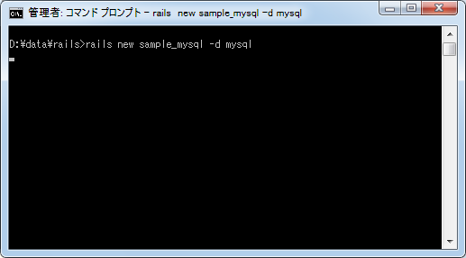
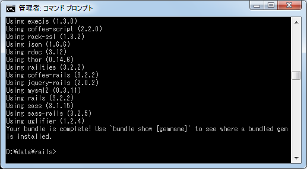
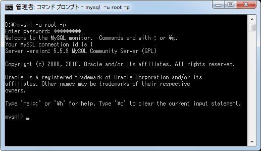
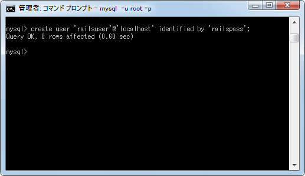
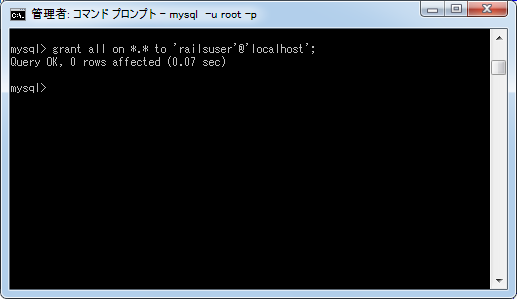

MySQL用ã�®ãƒ‡ãƒ¼ã‚¿ãƒ™ãƒ¼ã‚¹è¨å®šãƒ•ã‚¡ã‚¤ãƒ«(database.yml)
Railsã�§ã�¯ãƒ‡ãƒ•ã‚©ãƒ«ãƒˆã�§è¨å®šã�•ã‚Œã‚‹SQLite以外ã�§ã‚‚MySQLã‚„PostgreSQLã�¨ã�„ã�£ã�Ÿãƒ‡ãƒ¼ã‚¿ãƒ™ãƒ¼ã‚¹ã‚’使用ã�™ã‚‹ã�“ã�¨ã�Œã�§ã��ã�¾ã�™ã€‚ã�“ã�“ã�§ã�¯ä¾‹ã�¨ã�—ã�¦MySQLを使用ã�™ã‚‹å ´å�ˆã�«ã€Œdatabase.ymlã€�ファイルã�«ã�©ã�®ã‚ˆã�†ã�«è¨å®šã‚’記述ã�™ã‚Œã�°ã�„ã�„ã�®ã�‹ã�«ã�¤ã�„ã�¦è§£èª¬ã�—ã�¾ã�™ã€‚
1.MySQL用�「config/database.yml�ファイル
2.MySQL�ユーザー作�
MySQL用�「config/database.yml�ファイル
Railsã�®ã‚¢ãƒ—リケーションを作æˆ�ã�™ã‚‹ã�¨è‡ªå‹•çš„ã�«ã€Œdatabase.ymlã€�ファイルã�Œä½œæˆ�ã�•ã‚Œãƒ‡ãƒ•ã‚©ãƒ«ãƒˆã�®è¨å®šã�Œè¨˜è¿°ã�•ã‚Œã�¾ã�™ã€‚特ã�«æŒ‡å®šã�—ã�ªã�„å ´å�ˆã�¯SQLiteを使ã�†å‰�æ��ã�§ä½œæˆ�ã�•ã‚Œã‚‹ã�Ÿã‚�ã€�ä»–ã�®ãƒ‡ãƒ¼ã‚¿ãƒ™ãƒ¼ã‚¹ã‚’使用ã�™ã‚‹å ´å�ˆã�¯Railsã�®ã‚¢ãƒ—リケーションを作æˆ�ã�™ã‚‹æ™‚ã�«ã‚ªãƒ—ションã�§ãƒ‡ãƒ¼ã‚¿ãƒ™ãƒ¼ã‚¹ã‚’指定ã�—ã�¾ã�™ã€‚
rails new アプリケーション� -d データベース rails new アプリケーション� --database=データベース
指定�能�データベース�「mysql / oracle / postgresql / sqlite3 / frontbase / ibm_db / sqlserver / jdbcmysql / jdbcsqlite3 / jdbcpostgresql / jdbc���。
��実際�試�����。次�よ��テスト用�「sample_mysql�アプリケーションを作����。


データベースè¨å®šãƒ•ã‚¡ã‚¤ãƒ«ã�®ã€Œconfig/database.ymlã€�ファイルも作æˆ�ã�•ã‚Œã�¦ã�„ã�¾ã�™ã�®ã�§ãƒ†ã‚ストエディタã�§é–‹ã�„ã�¦ã�¿ã�¾ã�™ã€‚
# MySQL. Versions 4.1 and 5.0 are recommended. # # Install the MYSQL driver # gem install mysql2 # # Ensure the MySQL gem is defined in your Gemfile # gem 'mysql2' # # And be sure to use new-style password hashing: # http://dev.mysql.com/doc/refman/5.0/en/old-client.html development: adapter: mysql2 encoding: utf8 reconnect: false database: sample_mysql_development pool: 5 username: root password: host: localhost # Warning: The database defined as "test" will be erased and # re-generated from your development database when you run "rake". # Do not set this db to the same as development or production. test: adapter: mysql2 encoding: utf8 reconnect: false database: sample_mysql_test pool: 5 username: root password: host: localhost production: adapter: mysql2 encoding: utf8 reconnect: false database: sample_mysql_production pool: 5 username: root password: host: localhost
オプションã�§æŒ‡å®šã�—ã�ŸMySQLを利用ã�™ã‚‹ã�Ÿã‚�ã�®ãƒ‡ãƒ•ã‚©ãƒ«ãƒˆã�®è¨å®šã�Œè¨˜è¼‰ã�•ã‚Œã�¦ã�„ã�¾ã�™ã€‚development(開発用)ã€�test(テスト用)ã€�production(本番用)ã�®3ã�¤ã�«åˆ†ã�‹ã‚Œã�¦ã�„る点ã�¯SQLiteã�®å ´å�ˆã�¨å�Œã�˜ã�§ã�™ã�Œè¨å®šé …ç›®ã�¯å°‘ã�—ç•°ã�ªã‚Šã�¾ã�™ã€‚
adapter: 使用ã�™ã‚‹ãƒ‡ãƒ¼ã‚¿ãƒ™ãƒ¼ã‚¹ç¨®é¡� encoding: æ–‡å—コード reconnect: å†�æ�¥ç¶šã�™ã‚‹ã�‹ã�©ã�†ã�‹ database: データベースå�� pool: コãƒ�クションプーリングã�§ä½¿ç”¨ã�™ã‚‹ã‚³ãƒ�クションã�®ä¸Šé™� username: ユーザーå�� password: パスワード host: MySQLã�Œå‹•ä½œã�—ã�¦ã�„るホストå��
MySQLã�®å ´å�ˆã�¯ç‰¹ã�«ãƒ›ã‚¹ãƒˆå��ã€�ユーザーå��ã€�パスワードã�®æŒ‡å®šã�Œå¿…è¦�ã�§ã�™ã€‚ユーザーå��ã�¯ãƒ‡ãƒ•ã‚©ãƒ«ãƒˆã�§ã€Œrootã€�ã�«ã�ªã�£ã�¦ã�„ã�¾ã�™ã�Œã€�データベース作æˆ�ã�®æ¨©é™�ã�Œã�‚るユーザーをã�‚らã�‹ã�˜ã‚�MySQLã�«ä½œæˆ�ã�—ã�¦ã�Šã��ã€�ã��ã�®ãƒ¦ãƒ¼ã‚¶ãƒ¼å��ã�¨ãƒ‘スワードを指定ã�—ã�¦ã‚‚çµ�構ã�§ã�™ã€‚
MySQL�ユーザー作�
今��サンプル用�ユーザーを作�����。MySQL�ユーザーを作��る方法�詳細�����「ユーザー�作��を��照下��。
ã�¾ã�šrootユーザーã�§MySQLã�«ãƒã‚°ã‚¤ãƒ³ã�—ã�¾ã�™ã€‚

Railsアプリケーション用�ユーザー「railsuser�を作����(パスワード�「railspass������)。

次ã�«æ¨©é™�ã‚’è¨å®šã�—ã�¾ã�™ã€‚ã�©ã�®ã‚ˆã�†ã�ªæ¨©é™�ã�Œå¿…è¦�ã�ªã�®ã�‹ã�¯ã�£ã��ã‚Šã�¨åˆ†ã�‹ã‚‰ã�ªã�‹ã�£ã�Ÿã�Ÿã‚�ã€�ã‚°ãƒãƒ¼ãƒ�ルレベルã�§ALL権é™�を付ä¸�ã�—ã�¦ã�‚ã‚Šã�¾ã�™ã€‚(ã�“ã�®éƒ¨åˆ†ã�Œã�¯ã�£ã��ã‚Šã�¨åˆ†ã�‹ã‚Šã�¾ã�—ã�Ÿã‚‰ä¿®æ£ã�—ã�¾ã�™)。

ã�“ã‚Œã�§æº–å‚™ã�¯å®Œäº†ã�§ã�™ã€‚ã�§ã�¯ã€Œconfig/database.ymlã€�ファイルを次ã�®ã‚ˆã�†ã�«ä¿®æ£ã�—ã�¦ã�Šã��ã�¾ã�™ã€‚
development: adapter: mysql2 encoding: utf8 reconnect: false database: sample_mysql_development pool: 5 username: railsuser password: railspass host: localhost test: adapter: mysql2 encoding: utf8 reconnect: false database: sample_mysql_test pool: 5 username: railsuser password: railspass host: localhost production: adapter: mysql2 encoding: utf8 reconnect: false database: sample_mysql_production pool: 5 username: railsuser password: railspass host: localhost
�自身�環境�����「host�を変更����必���れ�「database�も変更�����下��。
( Written by Tatsuo Ikura )

著者 / TATSUO IKURA
åˆ�心者ï½�ä¸ç´šè€…ã�®æ–¹ã‚’対象ã�¨ã�—ã�Ÿãƒ—ãƒã‚°ãƒ©ãƒŸãƒ³ã‚°æ–¹æ³•ã‚„開発環境ã�®æ§‹ç¯‰ã�®è§£èª¬ã‚’è¡Œã�†ã‚µã‚¤ãƒˆã�®é�‹å–¶ã‚’è¡Œã�£ã�¦ã�„ã�¾ã�™ã€‚